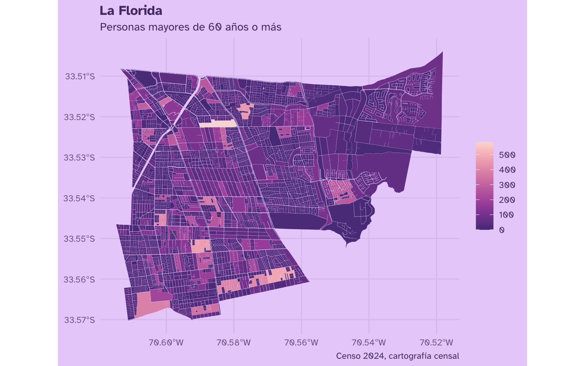
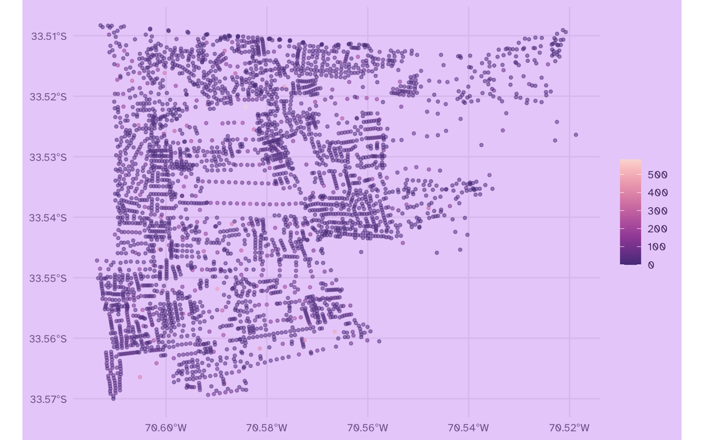
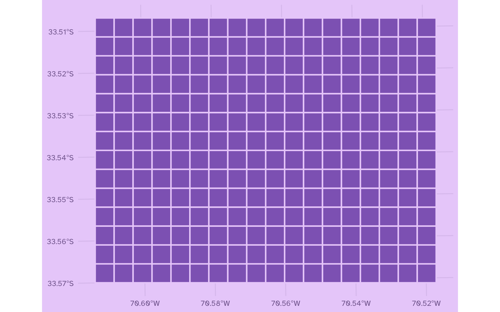
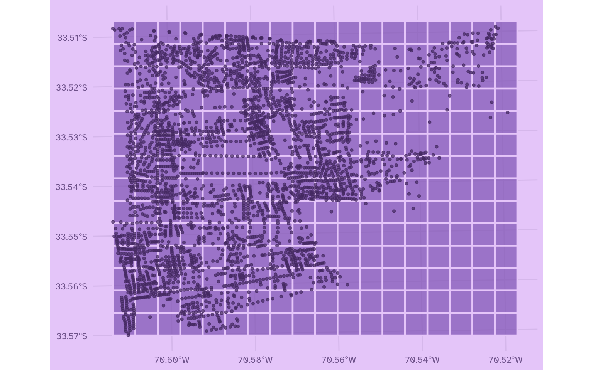
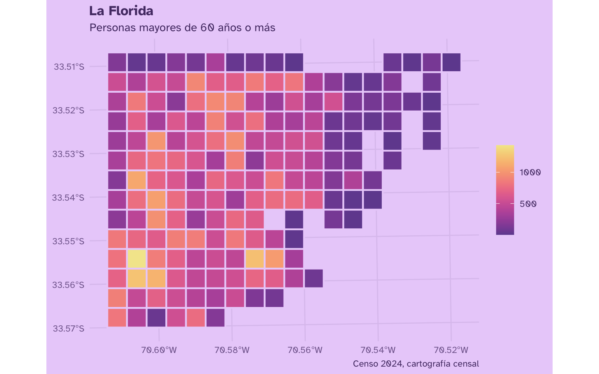
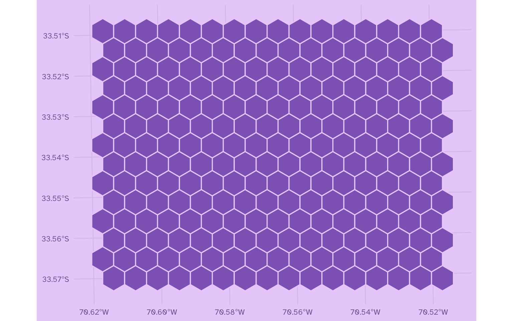
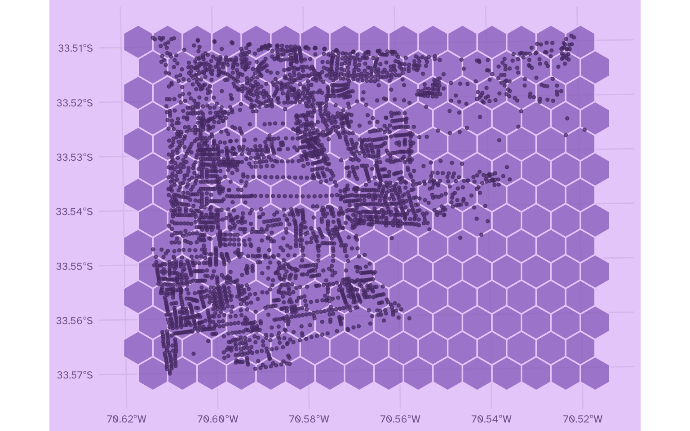
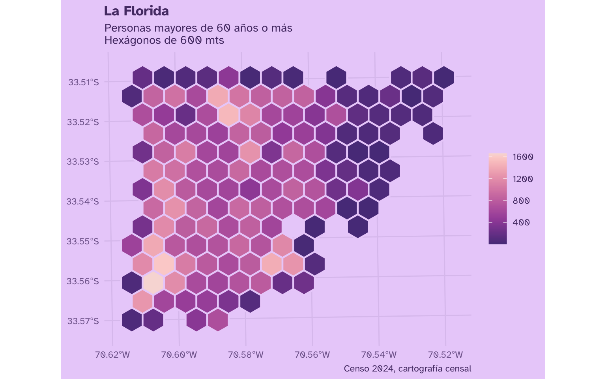
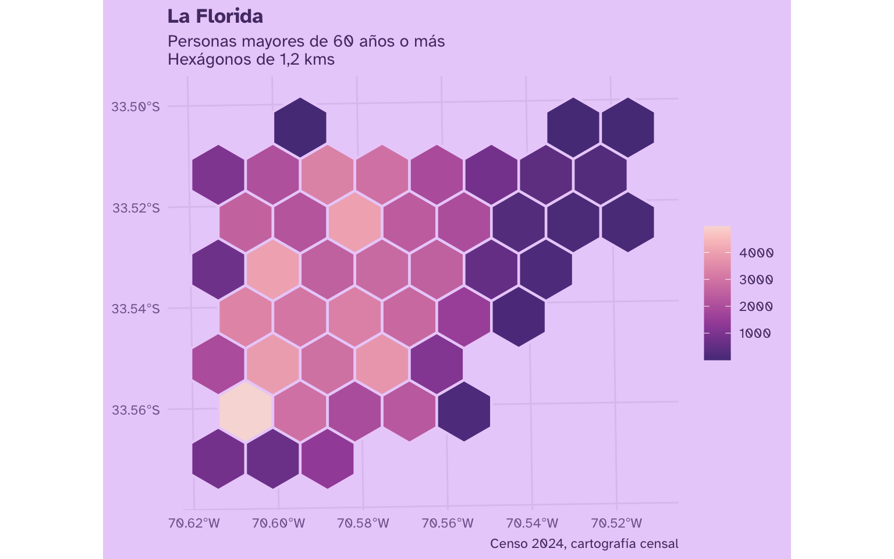
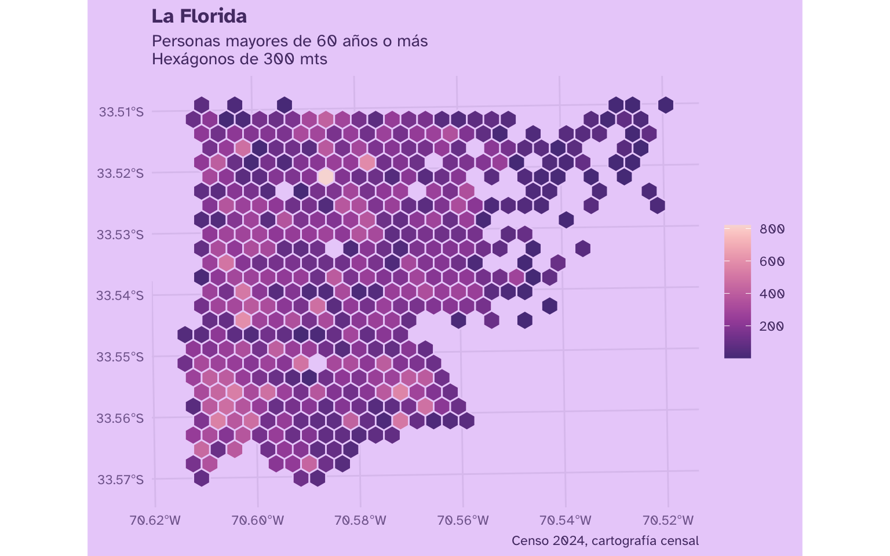

Mapas hexagonales o cuadriculados con R
30/4/2026
Al visualizar datos espaciales detallados, como los de la cartografía censal a nivel de manzanas, los polígonos presentan diversos tamaños y niveles de detalle. Esto puede ser demasiado detallado para la visualización que necesitemos, puede desconcentrar mucho, o bien, podemos necesitar homogeneizar la distribución de los datos en el territorio. En este tutorial veremos cómo crear mapas de hexágonos y de cuadrículas a partir de todo tipo de shapes.
# crea mapas para comunas o regiones
library(dplyr)
library(arrow)
Datos censales
Descarga los datos cartográficos del Censo 2024 desde la página del INE, entrando a Cartografía Censal y luego descargando el archivo Cartografía País Censo 2024 (geoparquet).
Luego cargamos los datos con la función open_dataset() de {arrow}, que carga los datos como una base de datos para que el proceso sea eficiente.
# cargar datos de cartografía censal
censo_manzanas <- open_dataset("Cartografia_censo2024_Pais_Manzanas.parquet")
Como vimos en el
tutorial del Censo 2024, cargar los datos censales como base de datos evita tener que cargar todos los datos de una sola vez, sino que cargas una referencia a los datos que no pesa nada, pero que puedes filtrar y seleccionar, y sólo cuando ya necesitas los datos los copias a la memoria con la función collect():
# filtrar datos de cartografía censal por manzana
censo_comuna <- censo_manzanas |>
filter(COMUNA == "LA FLORIDA") |>
# seleccionar variables
select(n_edad_60_mas, SHAPE) |>
# copiar desde la base de datos
collect()
Publicaciones relacionadas

Entonces abrimos la conexión con la base de datos, filtramos la columna COMUNA, seleccionamos la variable que nos interesa (en este caso n_edad_60_mas, personas de 60 años o más), y la columna SHAPE que contiene los polígonos de las manzanas censales.
Así se ve la tabla:
head(censo_comuna)
# A tibble: 6 × 2
n_edad_60_mas SHAPE
<dbl> <arrw_bnr>
1 71 [646]
2 79 [502]
3 7 [262]
4 34 [454]
5 121 [2,102]
6 44 [662]
Veamos cómo se ve el mapa! Para ello, tenemos que usar el paquete {sf}, como vimos en el
tutorial de mapas con R, para convertir el dataframe en un dataframe de catacterísticas geoespaciales:
library(sf)
# transformar a mapa
censo_comuna_mapa <- censo_comuna |>
st_as_sf() |>
st_set_crs(4674)
Publicaciones relacionadas

Ahora veamos cómo se ve el mapa:
Ver tema para los gráficos
library(ggplot2)
theme_set(
theme_minimal(
paper = "#EAD2FA",
ink = "#553A74",
accent = "#9069C0",
base_family = "Atkinson Hyperlegible") +
theme(plot.title = element_text(face = "bold"),
legend.title = element_blank()))
library(ggplot2)
# ver mapa
censo_comuna_mapa |>
ggplot() +
aes(fill = n_edad_60_mas) +
geom_sf(lwd = 0) +
scale_fill_continuous(palette = "PurpOr") +
labs(title = "La Florida",
subtitle = "Personas mayores de 60 años o más",
caption = "Censo 2024, cartografía censal")

# revisar mapa
library(mapview)
mapview(censo_comuna_mapa)
Publicaciones relacionadas

Mapa de puntos
Para poder visualizar estos datos territoriales en visualizaciones más homogéneas, como en cuadrículas o en hexágonos, primero tenemos que convertir los polígonos en puntos. Los puntos nos permitirán más adelante contar cuántos polígonos caen dentro de cada celda de las grillas.
Para convertir polígonos en puntos, usamos st_centroid() sobre la columna con los datos espaciales para
calcular su centroide. Como precaución, podemos agregar st_make_valid() para corregir los polígonos de antemano.
# pasar de polígonos a puntos
censo_comuna_puntos <- censo_comuna_mapa |>
st_make_valid() |>
mutate(SHAPE = st_centroid(SHAPE))
censo_comuna_puntos
Simple feature collection with 3584 features and 1 field
Geometry type: POINT
Dimension: XY
Bounding box: xmin: -70.61368 ymin: -33.57001 xmax: -70.51873 ymax: -33.5083
Geodetic CRS: SIRGAS 2000
# A tibble: 3,584 × 2
n_edad_60_mas SHAPE
* <dbl> <POINT [°]>
1 71 (-70.6113 -33.50983)
2 79 (-70.60988 -33.51116)
3 7 (-70.60929 -33.51137)
4 34 (-70.60912 -33.5118)
5 121 (-70.60675 -33.51419)
6 44 (-70.60518 -33.51488)
7 21 (-70.60469 -33.51533)
8 28 (-70.60347 -33.516)
9 120 (-70.60526 -33.51619)
10 12 (-70.60434 -33.51582)
# ℹ 3,574 more rows
Publicaciones relacionadas
Ahora cada polígono se convirtió en un punto ubicado al centro de cada figura:
censo_comuna_puntos |>
ggplot() +
aes(color = n_edad_60_mas) +
geom_sf(size = 1, alpha = 0.5) +
scale_color_continuous(palette = "PurpOr")

censo_comuna_puntos |> mapview::mapview(cex = 2, alpha = .4)
Mapa de cuadrícula
Una vez que tenemos los puntos, podemos empezar a crear la cuadrícula para visualizar los datos territoriales en cuadritos. Pero para que los cuadritos sean cuadrados, tenemos que hacer una reproyección de las coordenadas del mapa primero:
# convertir mapa a unidades métricas
censo_comuna_puntos <- censo_comuna_puntos |>
st_transform(32719)
Para crear la grilla o cuadrícula usamos st_make_grid(), a la que le especificamos el tamaño de los cuadros que queremos con set_units(), del paquete {units}. En este caso, haremos una cuadrícula con celdas de 0,5 kilómetros. Luego tenemos que aplicar st_as_sf() para que el mapa resultante vuelva a tener características de tabla, y enumeramos las celdas de la grilla con row_number().
library(units)
# calcular grilla cuadrada
cuadricula <- censo_comuna_puntos |>
st_make_grid(set_units(0.5, km)) |>
st_as_sf() |>
mutate(celda = row_number())
cuadricula
Simple feature collection with 252 features and 1 field
Geometry type: POLYGON
Dimension: XY
Bounding box: xmin: 350183.3 ymin: 6284358 xmax: 359183.3 ymax: 6291358
Projected CRS: WGS 84 / UTM zone 19S
First 10 features:
x celda
1 POLYGON ((350183.3 6284358,... 1
2 POLYGON ((350683.3 6284358,... 2
3 POLYGON ((351183.3 6284358,... 3
4 POLYGON ((351683.3 6284358,... 4
5 POLYGON ((352183.3 6284358,... 5
6 POLYGON ((352683.3 6284358,... 6
7 POLYGON ((353183.3 6284358,... 7
8 POLYGON ((353683.3 6284358,... 8
9 POLYGON ((354183.3 6284358,... 9
10 POLYGON ((354683.3 6284358,... 10
Veamos la cuadrícula resultante:
cuadricula |>
ggplot() +
geom_sf(fill = "#9069C0", color = "#EBD2FA", lwd = 0.8)

La cuadrícula usa la misma superficie que el mapa original. Podemos confirmar esto graficando la cuadrícula con los puntos encima:
ggplot() +
geom_sf(data = cuadricula,
fill = "#9069C0", color = "#EBD2FA", lwd = 0.8, alpha = 0.7) +
geom_sf(data = censo_comuna_puntos,
color = "#553A74", alpha = 0.7, size = 1)

Con el mapa anterior se entiende mejor el proceso que estamos haciendo: el valor de cada celda va a depender de los puntos que caen dentro de la misma. Para eso, tenemos que cruzar los puntos y las celdas, que hasta ahora son objetos distintos.
Pero cómo podemos cruzar dos mapas distintos que no tienen columnas en común? Por un lado tenemos los puntos con sus coordenadas, y por otro lado tenemos las celdas, con sus propias coordenadas que definen cada polígono cuadrado.
Podemos unir los datos de dos mapas en base a su ubicación geográfica con un cruce espacial o spatial join, usando la función st_join(). Un spatial join va a unir las filas de ambas tablas si la ubicación de los datos de una caen dentro de la ubicación espacial de la otra. En este caso, os puntos que caen dentro de una celda se unirán a la fila de esa celda:
# agregar datos a grilla de hexágonos
censo_comuna_cuadros <- cuadricula |>
st_join(censo_comuna_puntos)
censo_comuna_cuadros
Simple feature collection with 3653 features and 2 fields
Geometry type: POLYGON
Dimension: XY
Bounding box: xmin: 350183.3 ymin: 6284358 xmax: 359183.3 ymax: 6291358
Projected CRS: WGS 84 / UTM zone 19S
First 10 features:
celda n_edad_60_mas x
1 1 66 POLYGON ((350183.3 6284358,...
1.1 1 27 POLYGON ((350183.3 6284358,...
1.2 1 35 POLYGON ((350183.3 6284358,...
1.3 1 40 POLYGON ((350183.3 6284358,...
1.4 1 28 POLYGON ((350183.3 6284358,...
1.5 1 29 POLYGON ((350183.3 6284358,...
1.6 1 17 POLYGON ((350183.3 6284358,...
1.7 1 24 POLYGON ((350183.3 6284358,...
1.8 1 36 POLYGON ((350183.3 6284358,...
1.9 1 29 POLYGON ((350183.3 6284358,...
Podemos ver que ahora cada celda de la cuadrícula contiene los valores de los puntos que estaban dentro de ella. Por ejemplo, veamos los datos de la celda numero 4:
censo_comuna_cuadros |>
filter(celda == 4)
Simple feature collection with 22 features and 2 fields
Geometry type: POLYGON
Dimension: XY
Bounding box: xmin: 351683.3 ymin: 6284358 xmax: 352183.3 ymax: 6284858
Projected CRS: WGS 84 / UTM zone 19S
First 10 features:
celda n_edad_60_mas x
4 4 23 POLYGON ((351683.3 6284358,...
4.1 4 6 POLYGON ((351683.3 6284358,...
4.2 4 21 POLYGON ((351683.3 6284358,...
4.3 4 29 POLYGON ((351683.3 6284358,...
4.4 4 21 POLYGON ((351683.3 6284358,...
4.5 4 64 POLYGON ((351683.3 6284358,...
4.6 4 23 POLYGON ((351683.3 6284358,...
4.7 4 21 POLYGON ((351683.3 6284358,...
4.8 4 4 POLYGON ((351683.3 6284358,...
4.9 4 39 POLYGON ((351683.3 6284358,...
Ahora cada celda contiene datos de todas las observaciones (en este caso, personas) que se ubican en dicho cuadro. O sea que, por cada celda, hay varias filas que representan a las manzanas o polígonos que cayeron dentro de dicha celda.
Ahora queremos calcular el total de personas por celda, por lo que tenemos que sumar estos datos para resumir la tabla a una observación por cuadro. Para eso usamos summarize():
censo_comuna_conteo_cuadros <- censo_comuna_cuadros |>
# agrupar por celda
group_by(celda) |>
# sumar observaciones
summarise(
n_edad_60_mas = sum(n_edad_60_mas, na.rm = TRUE),
n_manzanas = n()) |>
# descartar celdas sin datos
filter_out(n_edad_60_mas == 0)
censo_comuna_conteo_cuadros
Simple feature collection with 177 features and 3 fields
Geometry type: POLYGON
Dimension: XY
Bounding box: xmin: 350183.3 ymin: 6284358 xmax: 359183.3 ymax: 6291358
Projected CRS: WGS 84 / UTM zone 19S
# A tibble: 177 × 4
celda n_edad_60_mas n_manzanas x
* <int> <dbl> <int> <POLYGON [m]>
1 1 826 28 ((350183.3 6284358, 350683.3 6284358, 350683.…
2 2 385 1 ((350683.3 6284358, 351183.3 6284358, 351183.…
3 3 56 2 ((351183.3 6284358, 351683.3 6284358, 351683.…
4 4 544 22 ((351683.3 6284358, 352183.3 6284358, 352183.…
5 5 765 16 ((352183.3 6284358, 352683.3 6284358, 352683.…
6 6 174 7 ((352683.3 6284358, 353183.3 6284358, 353183.…
7 19 877 28 ((350183.3 6284858, 350683.3 6284858, 350683.…
8 20 484 20 ((350683.3 6284858, 351183.3 6284858, 351183.…
9 21 689 18 ((351183.3 6284858, 351683.3 6284858, 351683.…
10 22 533 27 ((351683.3 6284858, 352183.3 6284858, 352183.…
# ℹ 167 more rows
Ahora sí, tenemos los valores de la variable que nos interesa por cada celda de la cuadrícula.
Repasando: calculamos una cuadrícula a partir del mapa con st_make_grid(), luego vimos qué puntos caen en cada celda de la cuadrícula, luego unimos los puntos con la cuadrícula con un st_join(), luego sumamos los puntos por cuadrícula con summarize().
Ver una forma más eficiente de hacer lo mismo
Lo anterior funcionó bien para este ejemplo, porque estamos usando los datos espaciales de una sola comuna. Pero si queremos hacer lo mismo para una región o un país puede ponerse más lento.
Esto es porque lo hicimos de uan manera simple pero ineficiente: al hacer summarize() de datos espaciales, se suman perfectamente las observaciones de cada grupo, pero también se habrían combinado las geometrías de las celdas, lo cual tiene un costo de procesamiento alto y es muy ineficiente e innecesario.
Para hacerlo más eficiente, podemos calcular por separado la suma por grupos, y luego agregar el resultado de la suma a la cuadrícula:
# descartar geometría y calcular valores por celda
conteo_celda <- censo_comuna_cuadros |>
# eliminar información espacial
st_drop_geometry() |>
# agrupar por celda
group_by(celda) |>
# sumar observaciones
summarise(
n_edad_60_mas = sum(n_edad_60_mas, na.rm = TRUE),
n_manzanas = n()
) |>
# descartar celdas sin datos
filter_out(n_edad_60_mas == 0)
# agregar las sumas a la cuadrícula
censo_comuna_conteo_cuadros <- cuadricula |>
left_join(conteo_celda,
by = join_by(celda)) |>
st_as_sf()
El resultado es el mismo, pero este método evita unir innecesariamente polígonos que son idénticos.
Finalmente tenemos la cuadrícula con los valores sumados de la población correspondiente a cada celda. Veamos el mapa!
censo_comuna_conteo_cuadros |>
ggplot() +
aes(fill = n_edad_60_mas) +
geom_sf(color = "#EBD2FA", lwd = 0.8) +
scale_fill_continuous(palette = "Sunset") +
labs(title = "La Florida",
subtitle = "Personas mayores de 60 años o más",
caption = "Censo 2024, cartografía censal")

¡Queda hermoso! Esta nueva visualización simplifica la complejidad de los datos territoriales originales, representando el espacio en una cuadrícula homogénea que igual permite identificar tendencias en un fenómeno territorial.
Mapa de hexágonos
Otra forma de simplificar datos espaciales es mediante hexágonos, figuras que tienen la cualidad de ser casi circulares, lo que permite una distribución más homogénea de las figuras1.
Para crear la grilla de hexágonos usamos la misma función st_make_grid(), pero pidiéndole polígonos y no cuadrados:
# calcular hexágonos
hexagonos <- censo_comuna_puntos |>
st_make_grid(cellsize = units::set_units(0.6, km), # tamaño de hexágonos
what = "polygons", square = FALSE) |>
st_as_sf() |>
mutate(celda = row_number())
Veamos la grilla hexagonal:
hexagonos |>
ggplot() +
geom_sf(fill = "#9069C0", color = "#EBD2FA", lwd = 0.6)

Ahora comparemos la grilla hexagonal con los puntos de las observaciones de nuestros datos, para ver cómo se van a distribuir los valores de los hexágonos en base a los datos de los polígonos territoriales:
ggplot() +
geom_sf(data = hexagonos,
fill = "#9069C0", color = "#EBD2FA", lwd = 0.6, alpha = 0.7) +
geom_sf(data = censo_comuna_puntos,
color = "#553A74", alpha = 0.7, size = 1)

Ahora unimos los datos de dos mapas según su intersección geográfica con un spatial join con st_join(). Así, se unirán los polígonos correspondientes a los hexágonos con los datos de los puntos cuando ambos compartan la misma ubicación en el territorio. Así, los puntos que caen dentro de una celda se unirán a la fila de esa celda:
# agregar datos a grilla de hexágonos
censo_comuna_hex <- hexagonos |>
st_join(censo_comuna_puntos)
censo_comuna_hex
Simple feature collection with 3655 features and 2 fields
Geometry type: POLYGON
Dimension: XY
Bounding box: xmin: 349583.3 ymin: 6284011 xmax: 359483.3 ymax: 6291459
Projected CRS: WGS 84 / UTM zone 19S
First 10 features:
celda n_edad_60_mas x
1 1 NA POLYGON ((349883.3 6284531,...
2 2 NA POLYGON ((349883.3 6285570,...
3 3 NA POLYGON ((349883.3 6286609,...
4 4 NA POLYGON ((349883.3 6287648,...
5 5 NA POLYGON ((349883.3 6288688,...
6 6 NA POLYGON ((349883.3 6289727,...
7 7 0 POLYGON ((349883.3 6290766,...
8 8 24 POLYGON ((350183.3 6284011,...
8.1 8 28 POLYGON ((350183.3 6284011,...
9 9 32 POLYGON ((350183.3 6285050,...
Agrupamos los datos por hexágono, y sumamos las observaciones para obtener un dataframe que tiene una fila por hexágono, que contiene las columnas con la variable que nos interesa, y la columna de la geometría de cada hexágono:
censo_comuna_conteo_hex <- censo_comuna_hex |>
group_by(celda) |>
# calcular sumas
summarise(
n_edad_60_mas = sum(n_edad_60_mas, na.rm = TRUE),
n_manzanas = n()
) |>
# descartar celdas sin datos
filter_out(n_edad_60_mas == 0)
censo_comuna_conteo_hex
Simple feature collection with 147 features and 3 fields
Geometry type: POLYGON
Dimension: XY
Bounding box: xmin: 349883.3 ymin: 6284011 xmax: 359183.3 ymax: 6291459
Projected CRS: WGS 84 / UTM zone 19S
# A tibble: 147 × 4
celda n_edad_60_mas n_manzanas x
* <int> <dbl> <int> <POLYGON [m]>
1 8 52 2 ((350183.3 6284011, 349883.3 6284184, 349883.…
2 9 55 2 ((350183.3 6285050, 349883.3 6285224, 349883.…
3 10 555 23 ((350183.3 6286090, 349883.3 6286263, 349883.…
4 14 73 5 ((350183.3 6290247, 349883.3 6290420, 349883.…
5 15 1267 38 ((350483.3 6284531, 350183.3 6284704, 350183.…
6 16 1179 49 ((350483.3 6285570, 350183.3 6285743, 350183.…
7 17 295 14 ((350483.3 6286609, 350183.3 6286782, 350183.…
8 18 354 23 ((350483.3 6287648, 350183.3 6287822, 350183.…
9 19 264 20 ((350483.3 6288688, 350183.3 6288861, 350183.…
10 20 678 9 ((350483.3 6289727, 350183.3 6289900, 350183.…
# ℹ 137 more rows
Ver forma optimizada para hacer lo mismo
Tomamos los datos cruzados con las celdas, le sacamos la información geográfica para dejar solamente celda y dato, agrupamos por celda y sumamos. Así obenemos celdas únicas con la suma de cada una. Luego simplemente agregamos estos resultados al objeto que contiene las celdas con sus polígonos. Así evitamos que el summarize() tenga que sumar también los polígonos, que es una operación lenta e innecesaria.
censo_comuna_conteo <- censo_comuna_hex |>
# descartar geometría
st_drop_geometry() |>
group_by(celda) |>
# calcular sumas
summarise(
n_edad_60_mas = sum(n_edad_60_mas, na.rm = TRUE),
n_manzanas = n()
) |>
# descartar celdas sin datos
filter_out(n_edad_60_mas == 0)
# agregar los datos a la grilla
censo_comuna_conteo_hex <- hexagonos |>
left_join(censo_comuna_conteo,
by = join_by(celda)) |>
st_as_sf()
censo_comuna_conteo_hex
Ahora podemos visualizar el mapa:
censo_comuna_conteo_hex |>
ggplot() +
aes(fill = n_edad_60_mas) +
geom_sf(color = "#EBD2FA", lwd = 0.8) +
scale_fill_continuous(palette = "PurpOr") +
labs(title = "La Florida",
subtitle = "Personas mayores de 60 años o más\nHexágonos de 600 mts",
caption = "Censo 2024, cartografía censal")

censo_comuna_conteo_hex |>
ggplot() +
aes(fill = n_edad_60_mas) +
geom_sf(color = "#EBD2FA", lwd = 1.3) +
scale_fill_continuous(palette = "PurpOr") +
theme(panel.grid = element_blank(),
axis.text = element_blank(),
legend.position = "none")
Cambiar tamaño de los hexágonos
Podemos repetir el proceso anterior, cambiando el tamaño de las celdas en st_make_grid() para tener hexágonos más grandes. Como convertimos el mapa a unidades métricas, podemos especificar el tamaño de los hexágonos en kilómetros.
Por ejemplo, podemos hacer los hexágonos más grandes:

…o hexágonos más chicos:

Publicaciones sobre mapas


Referencias
- Create spatial square/hexagon grids and count points inside in R with sf, por Urban Data Palette
- Mapping building use with a hexagonal grid, por Dr. Dominic Royé
-
La distancia del centro de cada hexágono hacia los adyacentes es la misma, y porque cada hexágono comparte un lado con sus adyacentes, no como en los cuadrados, donde la distancia a los que se encuentran en diagonal es mayor a la de los que están al lado o arriba/abajo. ↩︎